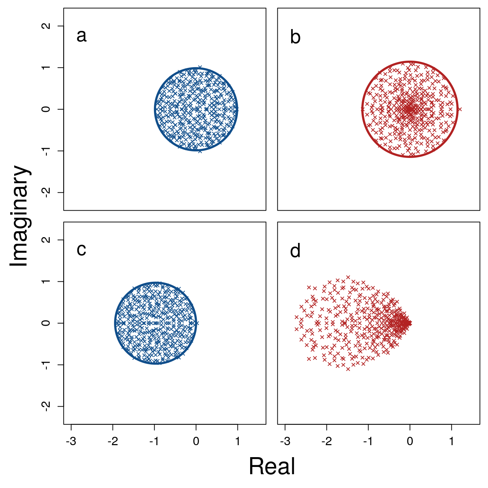

RandomMatrixStability.RmdThe stability of a complex system generally decreases with increasing system size, as is demonstrated by random matrix theory1,2. This counter-intuitive result, first shown by May1, is broadly relevant for understanding the dynamics and persistence of systems such as ecological1,2, neurological3,4, biochemical5,6 and socio-economic7–9 networks. Much attention has especially been given to the stability of ecological communities such as food webs or mutualist networks, with recent work investigating how different community structures affect stability2,10–14. But more broadly, stabilising mechanisms in complex systems remain under-developed, and the effect of variation in the response rate of individual system components remains an open problem15. Here I show that when components of a complex system respond to system perturbation at different rates (\(\boldsymbol{\gamma}\)), the potential for system stability is markedly increased. Stability is caused by the clustering of some eigenvalues toward the centre of eigenvalue distributions despite the destabilising effect of higher interaction strength variation (\(\boldsymbol{\sigma^{2}}\)). This effect of variation in \(\boldsymbol{\gamma}\) becomes increasingly important as system size increases, to the extent that the largest stable complex systems would otherwise be unstable if not for \(\boldsymbol{Var(\gamma)}\). My results therefore reveal a previously unconsidered driver of system stability that is likely to be pervasive across all complex systems. Future research in complex systems should therefore account for the varying response rates of individual system components when assessing whole system stability.
In 1972, May1 first demonstrated that randomly assembled systems of sufficient complexity are almost inevitably unstable given infinitesimally small perturbations. Complexity in this case is defined by the size of the system (i.e., the number of potentially interacting components; \(S\)), its connectance (i.e., the probability that one component will interact with another; \(C\)), and the variance of interaction strengths (\(\sigma^{2}\))2. May’s finding that the probability of local stability falls to near zero given a sufficiently high threshold of \(\sigma\sqrt{SC}\) has profound consequences across multiple disciplines, raising the question of how complex systems in, e.g., ecology2,10,13,15 or banking7,9,16 are predicted to persist or change.
Randomly assembled complex systems can be represented as large square matrices (\(M\)) with \(S\) components (e.g., species2 or banks7). One element of such a matrix, \(M_{ij}\), defines how component \(j\) affects component \(i\) in the system at a point of equilibrium2. Off-diagonal elements (\(i \neq j\)) therefore define interactions between components, while diagonal elements (\(i = j\)) define component self-regulation (e.g., carrying capacity in ecological communities). Traditionally, off-diagonal elements are assigned non-zero values with a probability \(C\), which are sampled from a distribution with variance \(\sigma^{2}\); diagonal elements are set to -11,2,15. Local system stability is assessed using eigenanalysis, with the system being stable if the real parts of all eigenvalues (\(\lambda\)) of \(M\) are negative (\(\max\left(\Re(\lambda)\right) < 0\))1,2. In a large system (high \(S\)), eigenvalues are distributed uniformly17 within a circle centred at \(\Re = -1\) (the mean value of diagonal elements) and \(\Im = 0\), with a radius of \(\sigma\sqrt{SC}\)1,2,15 (Figs 1a and 2a). Local stability of randomly assembled systems therefore becomes increasingly unlikely as \(S\), \(C\), and \(\sigma^{2}\) increase.
The above stability criterion assumes that individual components respond to perturbations of the system at the same rate (\(\gamma\)), but this is highly unlikely in any complex system. In ecological communities, for example, the rate at which population density changes following perturbation will depend on the generation time of individuals, which might vary by orders of magnitude among species. Species with short generation times will respond quickly (high \(\gamma\)) to perturbations relative to species with long generation times (low \(\gamma\)). Similarly, the speed at which individual banks respond to perturbations in financial networks, or individuals or institutions respond to perturbations in complex social networks, is likely to vary. The effect of such variance has not been investigated in complex systems theory. Intuitively, variation in \(\gamma\) might be expected to decrease system stability by introducing a new source of variation into the system and thereby increasing \(\sigma\). Here I show why, despite higher \(\sigma\), complex systems in which \(\gamma\) varies are actually more likely to be stable, especially when \(S\) is high.
Figure 1: Example distribution of eigenvalues before (a) and after (b) separating a randomly generated complex system into fast (\(\boldsymbol{\gamma} = 1.95\)) and slow (\(\boldsymbol{\gamma} = 0.05\)) component response rates. Each panel shows the same system where \(S = 200\), \(C = 0.05\), and \(\sigma = 0.4\), and in each case \(E[\gamma] = 1\) (i.e., only the distribution of \(\gamma\) differs between panels). a. Eigenvalues plotted when all \(\gamma = 1\); distributions of points are uniformly distributed within the grey circle with a radius of \(\sigma\sqrt{SC} =\) 1.238 centred at -1 on the real axis. b. Eigenvalues plotted when half \(\gamma = 1.95\) and half \(\gamma = 0.05\); distributions of points can be partitioned into one large circle of \(\sigma\sqrt{SC} =\) 1.718 centred at \(\gamma = -1.95\) and one small circle of \(\sigma\sqrt{SC} =\) 0.044 centred at \(\gamma = -0.05\). In a, the maximum real eigenvalue \(\max\left(\Re(\lambda)\right) =\) 0.2344871, while in b \(\max\left(\Re(\lambda)\right) =\) -0.0002273135, meaning that the complex system in b but not a is stable because in b \(\max\left(\Re(\lambda)\right) < 0\). In 1 million randomly generated complex systems under the same parameter values, 1 was stable when \(\gamma = 1\) while 32 were stable when \(\gamma = \{1.95, 0.05\}\). Overall, complex systems that are separated into fast versus slow components tend to be more stable than otherwise identical systems with identical component response rates.

Rows in \(M\) define how a given component \(i\) is affected by other components of the system, meaning that the rate of component response time can be modelled by multiplying all row elements by a real scalar value \(\gamma_{i}\)14 (see Supplementary Information for details). The distribution of \(\gamma\) over \(S\) components thereby models the distribution of component response rates. An instructive example compares one \(M\) where \(\gamma_{i} = 1\) for all \(i\) in \(S\) to the same \(M\) when half of \(\gamma_{i} = 1.95\) and half of \(\gamma_{i} = 0.05\). This models one system in which \(\gamma\) is invariant and one in which \(\gamma\) varies, but systems are otherwise identical (note \(E[\gamma_{i}] = 1\) in both cases). I assume \(S = 200\), \(C = 0.05\), and \(\sigma = 0.4\); diagonal elements are set to \(-1\) and non-zero off-diagonal elements are drawn randomly from \(\mathcal{N}(0, \sigma^{2})\). Rows are then multiplied by \(\gamma_{i}\) to generate \(M\). When \(\gamma_{i} = 1\), eigenvalues of \(M\) are distributed uniformly within a circle centred at (\(-1, 0\)) with a radius of 1.265 (Fig. 1a). Hence, the real components of eigenvalues are highly unlikely to all be negative when all \(\gamma_{i} = 1\). But when \(\gamma_{i}\) values are separated into two groups, eigenvalues are no longer uniformly distributed (Fig. 1b). Instead, two distinct clusters of eigenvalues appear (grey circles in Fig. 1b), one centred at (\(-1.95, 0\)) and the other centred at (\(-0.05, 0\)). The former has a large radius, but the real components have shifted to the left (in comparison to when \(\gamma = 1\)) and all \(\Re({\lambda}) < 0\). The latter cluster has real components that have shifted to the right, but has a smaller radius. Overall, for 1 million randomly assembled \(M\), this division between slow and fast component response rates results in more stable systems: 1 stable given \(\gamma = 1\) versus 32 stable given \(\gamma = \{1.95, 0.5\}\).
Figure 2: Distributions of eigenvalues before (a) and after (b) introducing variation in component response rate (\(\boldsymbol{\gamma}\)) in complex systems. Each panel show the same system where \(S = 1000\), \(C = 1\), and \(\sigma = 0.4\). a. Eigenvalues plotted in the absence of \(Var(\gamma)\) where \(E[\gamma] = 1\), versus b. eigenvalues plotted given \(\gamma \sim \mathcal{U}(0, 2)\), which increases the variance of interaction strengths (\(\sigma^{2}\)) but clusters eigenvalues toward the distribution’s centre (-1, 0). Black and red elipses in both panels show the circle centred on the distribution in panels a and b, respectively, which have a radius of \(\sigma \sqrt{SC}\). Proportions of \(\Re(\lambda) < 0\) are 0.552 and 0.554 for a and b, respectively.
Higher stability in systems with variation in \(\gamma\) can be observed by sampling \(\gamma_{i}\) values from various distributions. I now focus on a uniform distribution where \(\gamma \sim \mathcal{U}(0, 2)\) (see Supplementary Information for other distributions, which give similar results). As with the case of \(\gamma = \{1.95, 0.5\}\) (Fig. 1b), \(E[\gamma] = 1\) when \(\gamma \sim \mathcal{U}(0, 2)\), allowing comparison of \(M\) before and after variation in component response rate. Figure 2 shows a comparison of eigenvalue distributions given \(S = 1000\), \(C = 1\), and \(\sigma = 0.4\). As expected17, when \(\gamma = 1\), eigenvalues are distributed uniformly in a circle centred at (\(-1, 0\)) with a radius of \(\sigma\sqrt{SC} =\) 12.649. Uniform variation in \(\gamma\) leads to a non-uniform distribution of eigenvalues, some of which are clustered tightly around the centre of the distribution, but others of which are spread outside the former radius of 12.649 (red circle Fig 2b). This larger radius occurs because the addition of \(Var(\gamma)\) increases the realised \(\sigma\) of \(M\). The clustering and spreading of eigenvalues introduced by \(Var(\gamma)\) can destabilise previously stable systems or stabilise systems that are otherwise unstable. But where systems are otherwise too complex to be stable given \(\gamma = 1\), the effect of \(Var(\gamma)\) can often lead to stability above May’s1,2 threshold of \(\sigma\sqrt{SC} > 1\).
Figure 3: Stability of large complex systems with and without variation in component response rate(\(\boldsymbol{\gamma}\)). The \(\ln\) number of systems that are stable across different system sizes (\(S\)) given \(C = 1\), and the proportion of systems in which variation in \(\gamma\) is critical for system stability. For each \(S\), 1 million complex systems are randomly generated. Stability of each complex system is tested given variation in \(\gamma\) by randomly sampling \(\gamma \sim \mathcal{U}(0, 2)\). Stability given \(Var(\gamma)\) is then compared to stability in an otherwise identical system in which \(\gamma = E[\mathcal{U}(0, 2)]\) for all components. Light and dark grey bars show the number of stable systems in the absence and presence of \(Var(\gamma)\), respectively. The black line shows the proportion of systems that are stable when \(Var(\gamma) > 0\), but would be unstable if \(Var(\gamma) = 0\).
To investigate the effect of \(Var(\gamma)\) on system stability, I simulated random \(M\) matrices at \(\sigma = 0.4\) and \(C = 1\) across \(S\) ranging from 2-32. One million \(M\) were simulated for each \(S\), and the stability of \(M\) was assessed given \(\gamma = 1\) versus \(\gamma \sim \mathcal{U}(0, 2)\). I found that the number of stable random systems was consistently higher given \(Var(\gamma)\) than when \(\gamma = 1\) (Fig. 3), and that the difference between the probabilities of observing a stable system increased with an increase in \(S\); i.e., the potential for \(Var(\gamma)\) to drive stability increased with system complexity. For the highest values of \(S\), nearly all systems that were stable given \(Var(\gamma)\) would not have been stable given \(\gamma = 1\) (see Supplementary Information for full results). This suggests that the stability of large systems might be dependent upon variation in the response rate of their individual components, meaning that factors such as generation time (in ecological networks), transaction speed (in economic networks), or communication speed (in social networks) needs to be considered when investigating the stability of complex systems.
It is important to point out that \(Var(\gamma)\) is not stabilising per se; that is, adding variation in \(\gamma\) to a particular system \(M\) does not necessarily increase the probability that the system will be stable (see Supplementary Information). Rather, systems that are observed to be stable are more likely to vary in \(\gamma\), and for this \(Var(\gamma)\) to be critical to their stability. This is caused by the shift in the distribution of eigenvalues that occurs by introducing \(Var(\gamma)\) (Fig. 1b, 2b), which can sometimes result in all \(\Re(\lambda) < 0\) but might also increase \(\Re(\lambda)\) values.
To further investigate the potential of \(Var(\gamma)\) to be stabilising, I used a genetic algorithm (the space of possible \(\gamma\) values was too large to search exhaustively18; see Supplementary Information). For each of 10000 random \(M\), the genetic algorithm initialised 1000 different sets of \(\gamma \sim \mathcal{U}(0, 2)\) values of size \(S\). Eigenanalysis was performed on \(M\) using each set of \(\gamma\) values, and the 20 sets with the lowest \(\max\left(\Re(\lambda)\right)\) each produced 50 clonal offspring with subsequent mutation and crossover between the resulting new population of 1000 \(\gamma\) sets. The genetic algorithm terminated if a stable \(M\) was found, 20 generations occurred, or a convergence criteria of minimum fitness increase between generations was satisfied. Across \(S = \{2, 3, ..., 39, 40\}\), sets of \(\gamma\) values were found that resulted in stable systems with probabilities that were orders of magnitude higher than when \(\gamma = 1\) (see Supplementary Information), meaning that stability could often be achieved by manipulating \(S\) \(\gamma\) values rather than \(S \times S\) \(M\) elements. Hence, managing the response rates of system components in a targetted way can potentially facilitate the stabilisation of complex systems through a reduction in dimensionality.
I have focused broadly on random complex systems, but it is also worthwhile to consider more restricted interactions such as those of specific ecological networks2. These include systems in which all interactions are negative (competitive networks), positive (mutualist networks), or \(i\) and \(j\) pairs have opposing signs (predator-prey networks). In general, competitive and mutualist networks tend to be destabilising, and predator-prey network tend to be stabilising19. When \(Var(\gamma)\) is applied to each, the proportion of stable competitive and predator-prey networks increases, but the proportion of stable mutualist networks does not (see Supplementary Information). Additionally, when each component of \(M\) is interpreted as a unique species and given a random intrinsic growth rate20, feasibility is not increased by \(Var(\gamma)\), suggesting that variation in species generation time might be unlikely to drive stability in purely multi-species networks (see Supplementary Information).
My results show that complex systems are more likely to be stable when the response rates of system components vary. These results are broadly applicable to complex biological and social networks.
Acknowledgements: I am supported by a Leverhulme Trust Early Career Fellowship (ECF-2016-376). Conversations with L. Bussière and N. Bunnefeld, and helpful comments from J. J. Cusack and I. L. Jones, improved the quality of this work.
References
1. May, R. M. Will a large complex system be stable? Nature 238, 413–414 (1972).
2. Allesina, S. & Tang, S. Stability criteria for complex ecosystems. Nature 483, 205–208 (2012).
3. Gray, R. T. & Robinson, P. A. Stability and synchronization of random brain networks with a distribution of connection strengths. Neurocomputing 71, 1373–1387 (2008).
4. Gray, R. T. & Robinson, P. A. Stability of random brain networks with excitatory and inhibitory connections. Neurocomputing 72, 1849–1858 (2009).
5. Rosenfeld, S. Patterns of stochastic behavior in dynamically unstable high-dimensional biochemical networks. Gene Regulation and Systems Biology 3, 1–10 (2009).
6. MacArthur, B. D., Sanchez-Garcia, R. J. & Ma’ayan, A. Microdynamics and criticality of adaptive regulatory networks. Physics Review Letters 104, 168701 (2010).
7. Haldane, A. G. & May, R. M. Systemic risk in banking ecosystems. Nature 469, 351–355 (2011).
8. Suweis, S. & D’Odorico, P. Early warning signs in social-ecological networks. PLoS ONE 9, (2014).
9. Bardoscia, M., Battiston, S., Caccioli, F. & Caldarelli, G. Pathways towards instability in financial networks. Nature Communications 8, 1–7 (2017).
10. Mougi, A. & Kondoh, M. Diversity of interaction types and ecological community stability. Science 337, 349–351 (2012).
11. Allesina, S. & Tang, S. The stability–complexity relationship at age 40: a random matrix perspective. Population Ecology 63–75 (2015). doi:10.1007/s10144-014-0471-0
12. Gao, J., Barzel, B. & Barabási, A. L. Universal resilience patterns in complex networks. Nature 530, 307–312 (2016).
13. Grilli, J. et al. Feasibility and coexistence of large ecological communities. Nature Communications 8, (2017).
14. Patel, S., Cortez, M. H. & Schreiber, S. J. Partitioning the effects of eco-evolutionary feedbacks on community stability. American Naturalist 191, 1–29 (2018).
15. Allesina, S. et al. Predicting the stability of large structured food webs. Nature Communications 6, 7842 (2015).
16. May, R. M., Levin, S. A. & Sugihara, G. Complex systems: Ecology for bankers. Nature 451, 893–895 (2008).
17. Tao, T. & Vu, V. Random matrices: Universality of ESDs and the circular law. Annals of Probability 38, 2023–2065 (2010).
18. Hamblin, S. On the practical usage of genetic algorithms in ecology and evolution. Methods in Ecology and Evolution 4, 184–194 (2013).
19. Allesina, S. & Levine, J. M. A competitive network theory of species diversity. Proceedings of the National Academy of Sciences of the United States of America 108, 5638–5642 (2011).
20. Dougoud, M., Vinckenbosch, L., Rohr, R., Bersier, L.-F. & Mazza, C. The feasibility of equilibria in large ecosystems: a primary but neglected concept in the complexity-stability debate. PLOS Computational Biology 14, e1005988 (2018).